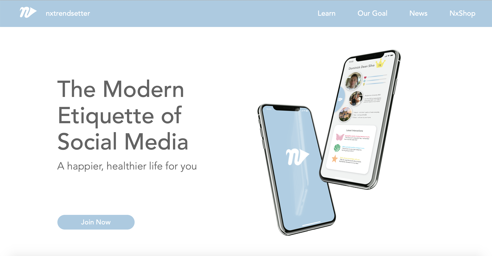
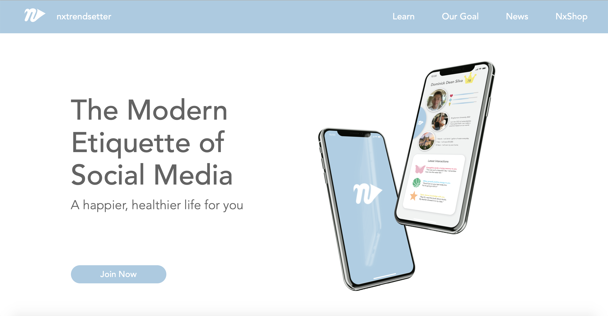
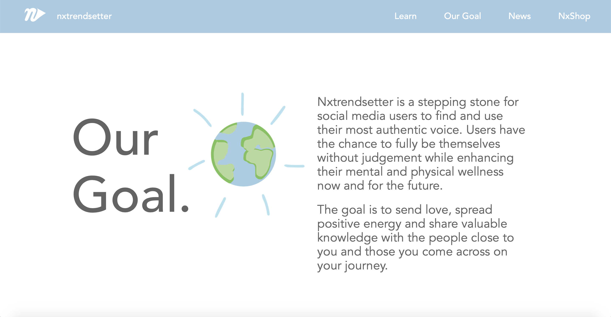
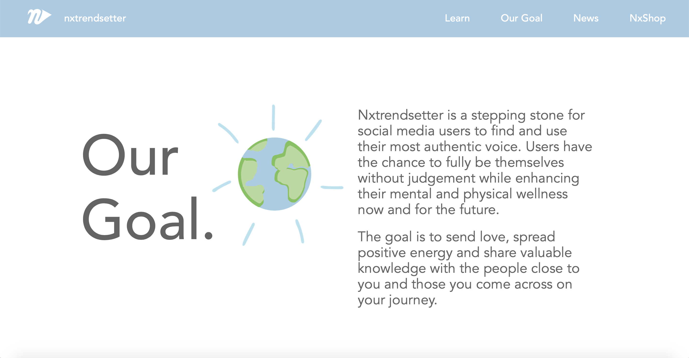

Nxtrendsetter
 


 


Nxtrendsetter Marketing Website
Link to Nxtrendsetter Website PrototypeNxtrendsetter is a wellness social media app focused on positivity. Users can send love, spread positivity, and share knowledge along with sharing their life goals on this application. Dominick Silva, the founder of Nxtrendsetter, came to me with the idea for this app and asked me if I would like to help design it. Dominick is a Psychology major at Binghamton University, who has come up with an excellent idea for altering the future of social media applications. He has grown tired with seeing our generation focus on superficiality of present day media. Since January of 2021, I have been designing the front-end of the app and decided to create a marketing website for its promotion.
The website is very minimal and clean, following the light blue and grey color palette. There are different tabs explaining the goal of the application, the main tools, and current updates on its creation. In addition, the website will have an apparel shop where users can purchase t-shirts, hoodies, hats, and more with the official nxtrendsetter logo. I chose the Avenir font to follow through with the clean, modern aesthetic. I added hand drawn graphics with bright colors to add a light-hearted fun touch.